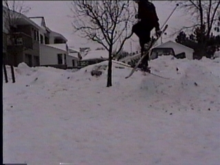

How to Japan Air
The japan air really is another basic trick that you all should have. It's also a bit harder than the indy but looks better.
The Steps:
1) Hit the jump.
2)Bring both legs up.
3)Move you grab hand down and other hand up
4)Grab your ski (Grab) Hand to Opposite ski behind
leg to inside of boot.
5)Release grab and extend legs.
6)Land
Tweaking:
Instead of bringing up both feet you only bring up the one your going
to grab. Then all you do is grab and kick the other leg out. Also adds some
style to drop the grabbed tip down.
Picture:
